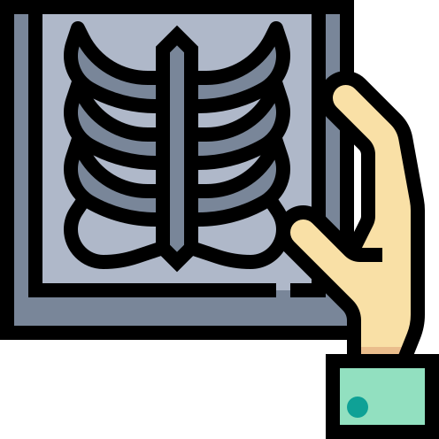
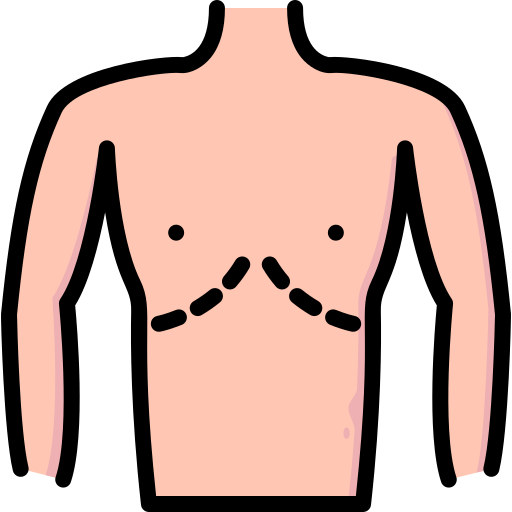
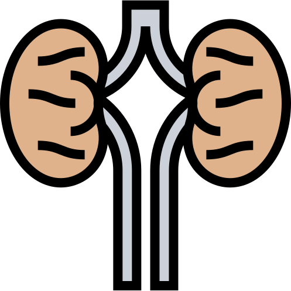
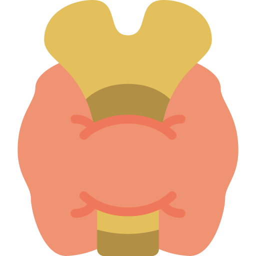
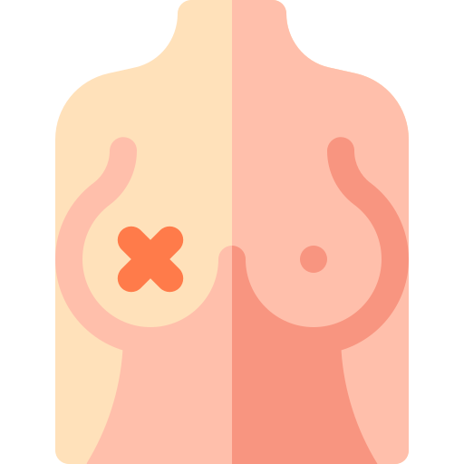
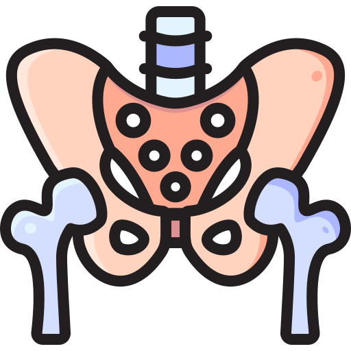

Consultas ecograficas integrales
Ofrecemos chequeos medicos y ecografias. Un chequeo a tiempo, puede salvar una vida.

Ecografia abdominal
Ofrece la evaluacion de los organos abdominales: higado, vesicula biliar, riñones, pancreas, estomago, colon, bazo y vasos sanguineos; permitiendo el diagnostico de patologias como hepatitis, higado graso, colescistitis vesicular, pancreatitis
aguda, colitis, entre otras.

Ecografia renal
Consta del estudio de los riñones, ureteres y vejiga. Por medio de este ultrasonido (ecografia) estudiamos calculos, inflamaciones, anormalidades congenitas del riñon y mucho mas.

Ecografia Tiroidea
La ecografía es el examen de imágenes con mejor relación costo-beneficio para estudiar el tiroides. Se recomienda solicitar ecografía tiroidea en pacientes con bocio, nódulos palpables, antecedentes de cáncer de tiroides familiar, antecedentes
de irradiación cervical en la infancia.

Ecografia mamaria
En general la ecografía de mama proporciona muy buenas imágenes. En ella vamos a estudiar el tejido glandular, fibroso y graso, a su vez lesiones quisiticas, nodulares, malingas y beningnas.

Ecografia pelvica
Cuenta con la observacion y evaluacion de los organos genitales femeninos: utero y ovarios. Se realiza con la vejiga llena por lo que se recomienda la ingesta de agua antes del examen.
Ecografia prostatica
Se realiza por via abdominal y permite valorar la forma, el tamaño de las distintas partes de la próstata, y el crecimiento a lo largo del tiempo. Al igual que en la ecografia pelvica el paciente debe asistir con la vejiga llena para su
mejor visualizacion.
Ecografia testicular
Ayuda a diagnosticar enfermedades del cordón espermático y del testículo. Así como también enfermedades del epidídimo y del contenido del escroto, como son las hernias y el hidrocele.